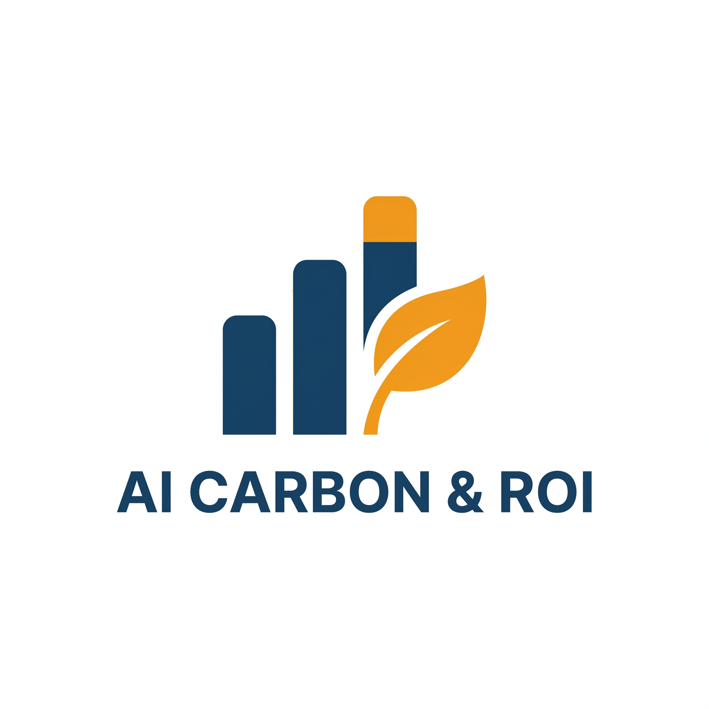
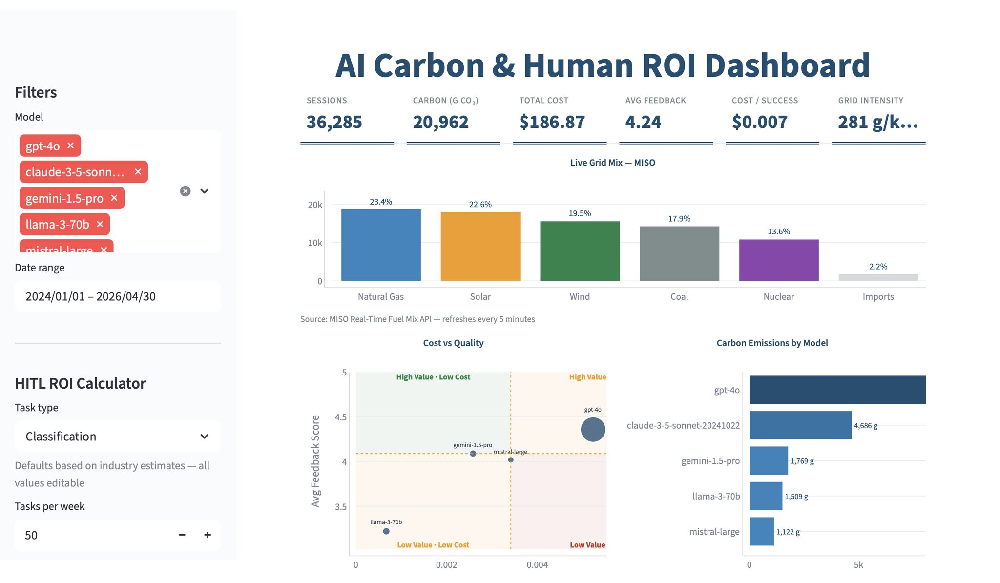
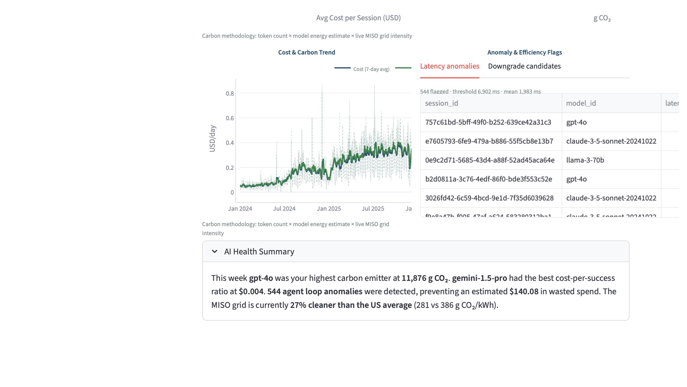
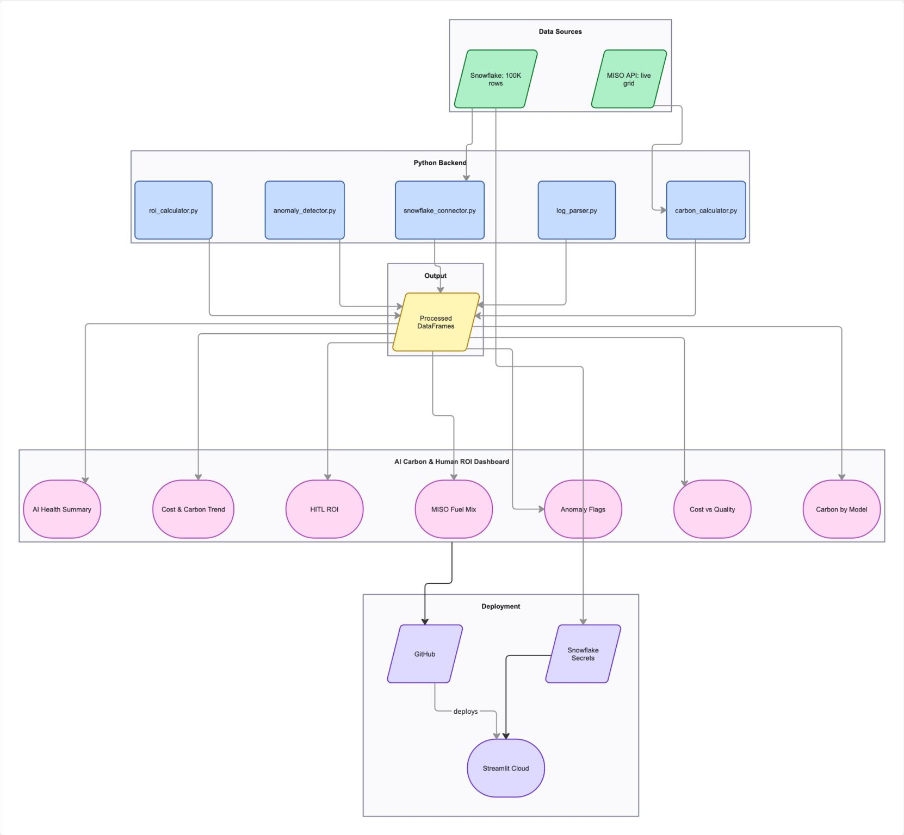

Most organizations deploying AI today can tell you what they spent on tokens. Almost none can tell you what they got for it, or what it cost the planet. Finance leaders see monthly API invoices with no breakdown by outcome, model, or environmental impact. Operations managers have no way to detect runaway agent loops before they drain company credit. There is no standard tool that bridges AI telemetry data and business value metrics.
A full-stack business intelligence dashboard that ingests 100,000 AI API session logs from Snowflake, enriches them with real-time carbon calculations from the MISO energy grid, and surfaces actionable insights through an interactive Streamlit dashboard.
The core of the project is the Cost per Successful Task metric — total spend divided by sessions where feedback score was 4 or above. This reframes AI spend from a line item expense into an efficiency ratio. A cheap model that fails 60% of the time may cost more per good outcome than an expensive model that succeeds 95% of the time.
The carbon layer pulls live fuel mix data from the MISO Midwest grid API every 5 minutes — wind, solar, coal, natural gas, nuclear percentages — and calculates a dynamic carbon coefficient for every session. Not a hardcoded estimate. It reflects what the grid actually looks like at that moment.
The anomaly detection layer flags agent loop bursts where a single session triggers more than 50 API calls in 60 seconds, and downgrade candidates where expensive frontier models handle simple low-token tasks at 10x unnecessary cost.
The HITL ROI Calculator compares AI task cost to equivalent human labor hours, translating token math into the language finance and operations leaders already use to make resourcing decisions.
The pipeline connects to Snowflake using RSA key pair authentication with no passwords stored anywhere. Private key lives outside the repo, credentials injected via Streamlit secrets on deployment, Snowflake account password unset entirely.


